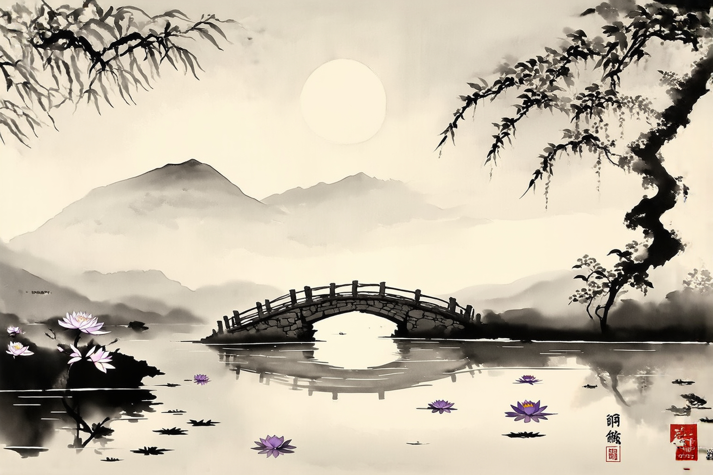
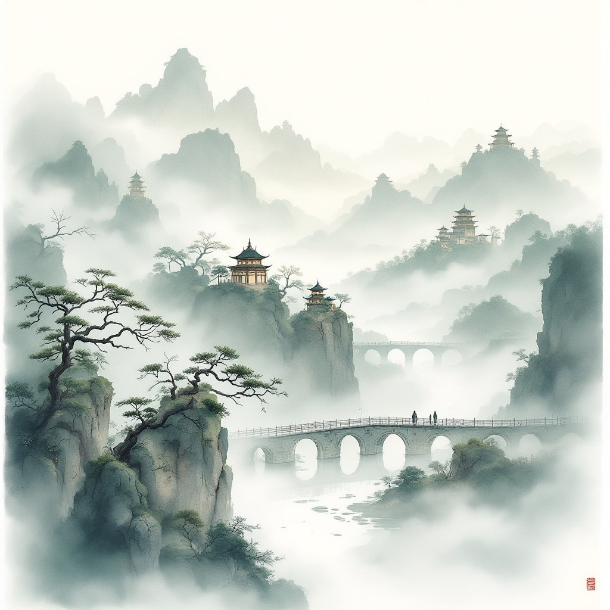
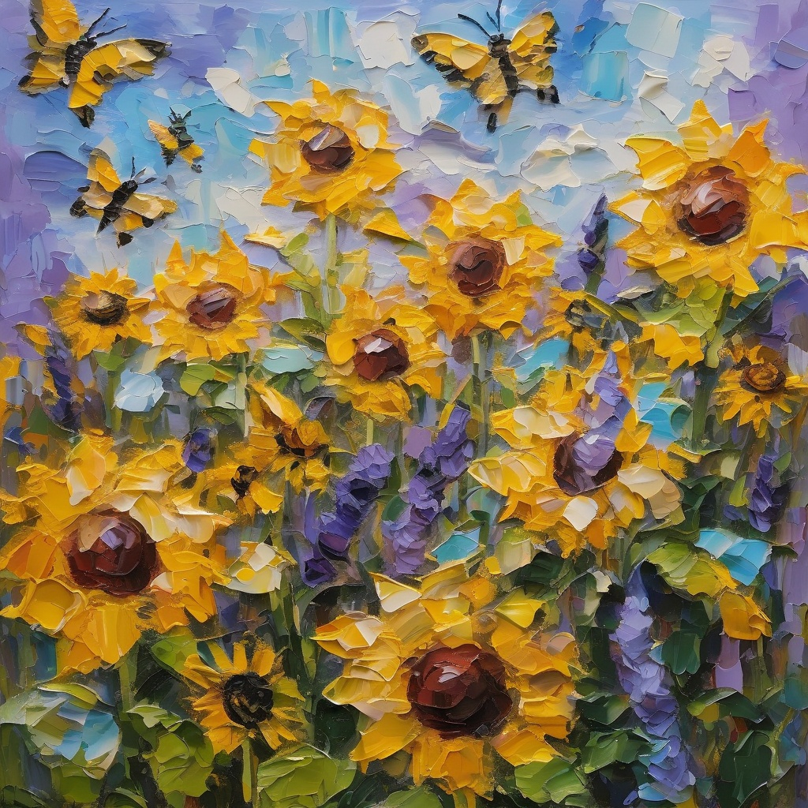

wide waterfall followed by fierce river water streaming down, on the two sides of the bank, trees grow, behind at the background, several mountains erect. Traditional Chinese watercolor, wide strokes.

Huangshan's jagged granite peaks breaking through sea of clouds, ancient twisted pines silhouetted along narrow ridges, black-and-white ink wash style with minimal color, layered mist created with diluted ink, serenity and grandeur expressed through negative space, brushwork suggesting movement of wind and fog”
—style: traditional Chinese ink wash
—medium: brush on xuan paper
—palette: black ink, light ash gray, subtle tea-stained beige
—mood: timeless, poetic, spiritual
—inspired by: Chinese literati painters, misty mountain scrolls

Create a Ancient Chinese watercolor black and white painting, a large lake
with mountainous background, sun half hiding behind the scene. with plenty lotus flowers and lotus leafs occupying lake in the close up. A stone structured bridge with only one arch extends through across the image, with willow trees on. Incorporate loose stroke, mimic watercolor painting strokes, archaic, serene.
Create a monochromatic black-and-white watercolor painting of West Lake at dusk, rendered in the style of traditional Chinese ink-wash art. Focus on capturing the essence of the scene with loose, expressive brushstrokes that emphasize rhythm and mood. In the foreground, depict floating lotus leaves and delicate blooms using translucent ink washes, allowing white spaces to suggest light and reflection. In the middle ground, include the iconic "Three Pools Mirroring the Moon" pagodas rising from the lake, their forms defined by bold yet fluid brushstrokes that convey depth and shadow. Behind them, highlight the Duan Bridge (断桥), arching gracefully over the water with drooping willow branches painted in fine, calligraphic lines to suggest movement and softness. Use varying ink densities to create atmospheric perspective, blending distant mountains into misty grays and negative space. Avoid rigid outlines; instead, let forms dissolve softly into the paper, evoking the dreamy, ethereal quality of classic ink art. Ensure the overall composition balances asymmetry and negative space, reflecting the principles of traditional Chinese painting.
Traditional Chinese watercolor art. Serene, emphasizing nature and the Great Wall interaction. Majestic.

Ethereal watercolor landscape in traditional Chinese style, misty mountains rising through drifting clouds, layered ink-wash textures, delicate pine trees clinging to jagged cliffs, winding rivers with stone bridges, distant pagodas silhouetted against a pale sky, soft muted color palette of jade green, slate gray, and tea-stained parchment, intricate brush strokes, tranquil and poetic ambiance, inspired by Song Dynasty shan shui art, 4K fine-detail rendering, balance of negative space and texture”
—style: watercolor, ink wash
—medium: rice paper, mineral pigments
—palette: jade green, ink black, sepia, soft indigo
—mood: serene, timeless, meditative
—inspired by: Fan Kuan, Guo Xi, Ma Yuan
Create a serene black-and-white ink-wash painting of a tranquil autumn scene. Depict withered vines clinging to an ancient, gnarled tree silhouetted against a dusky sky, with crows perched on its branches. In the foreground, show a small stone bridge arching over a gentle stream, surrounded by modest rural houses nestled among soft mist. On an ancient cobblestone path, a thin horse walks slowly into the western wind, evoking solitude and timelessness. Use loose, expressive brushstrokes and tonal gradations to capture the dreamy, ethereal quality of traditional Chinese ink art. Balance negative space and asymmetry to evoke harmony between nature and human life.
Huangshan’s jagged granite peaks breaking through sea of clouds, ancient twisted pines silhouetted along narrow ridges, black-and-white ink wash style with minimal color, layered mist created with diluted ink, serenity and grandeur expressed through negative space, brushwork suggesting movement of wind and fog”
—style: traditional Chinese ink wash
—medium: brush on xuan paper
—palette: black ink, light ash gray, subtle tea-stained beige
—mood: timeless, poetic, spiritual
—inspired by: Chinese literati painters, misty mountain scrolls

Impressionist art style with large palette-knife impasto technique, children’s abstract figures flying vibrant geometric kites above a pollinator garden bursting with sunflowers, lavender, and coneflowers, dynamic brushstrokes blending bold magentas, yellows, and blues to mimic laughter’s energy, bees and butterflies subtly integrated into floral textures symbolizing ecological balance, soft-focus motion lines trailing kites to imply joyful movement warm golden light unifying the scene as a metaphor for future generations’ harmony with nature, loose impasto strokes creating tactile depth in petals and grasses
Impressionist art style with large palette-knife impasto technique, urban rooftop garden at twilight glowing with warm amber city lights against cool indigo skies, blurred geometric architecture softened by vibrant floral clusters (daisies, succulents) in detailed impasto strokes, vines spilling over concrete edges symbolizing nature reclaiming space, soft transitions blending golden window glows into twilight mist, visible brushwork textures contrasting smooth building surfaces with wildflower textures, atmospheric perspective merging distant skyscrapers into hazy lavender horizons
impressionist art style with large palette-knife impasto technique, melting glacier under pale Arctic light, fractured brushwork blending cool blues and whites into luminous ice textures, distant blurred polar bear silhouette standing vulnerably on shrinking ice, icy waves and fractured chunks rendered with visible strokes to emphasize fragility, soft-edged reflections merging with cold mist, urgent climate action theme symbolized through precarious wildlife stance and dissolving glacial forms, atmospheric perspective with muted silver-gold light gradients
Impressionist golden hour in wildflower meadow, loose expressive brushstrokes, sun-drenched daisies poppies lupines, warm orange-yellow-purple gradient sunset, soft hazy atmosphere, vibrant light dancing on petals, visible texture strokes, muted shadows blending horizon, symbolic biodiversity renewal theme, 19th century plein air style with large palette-knife, romantic luminous glow
Impressionist art style with large palette-knife impasto technique, urban rooftop garden at twilight glowing with warm amber city lights against cool indigo skies, blurred geometric architecture softened by vibrant floral clusters (daisies, succulents) in detailed impasto strokes, vines spilling over concrete edges symbolizing nature reclaiming space, soft transitions blending golden window glows into twilight mist, visible brushwork textures contrasting smooth building surfaces with wildflower textures, atmospheric perspective merging distant skyscrapers into hazy lavender horizons.
Impressionist art style with fluid overlapping brushstrokes, vibrant coral reef underwater dreamscape, iridescent blues and greens blending seamlessly, schools of fish gliding through shimmering sunlight reflections, mosaic-like water ripples with visible texture strokes, soft-edged corals glowing in filtered light, symbolic ocean conservation and interconnected ecosystems theme, luminous aquatic hues merging into ethereal depths, dynamic yet serene underwater motion captured through loose impasto technique

Impressionist art style with large palette-knife impasto technique, community tree planting at dawn, silhouetted abstract figures blurred in motion, misty forest clearing with soft-edged saplings, dappled morning light filtering through distant trees, muted greens and golden hues merging in haze, symbolic human collaboration with nature theme, loose brushwork capturing transient light and unity, atmospheric perspective and textured foliage
Impressionist art style with large palette-knife impasto technique, wind turbines at sunset over rolling hills, swirling pink-gold-lavender skies with visible brushwork, simplified turbine forms blending into gradient horizon, pastoral landscape with soft-edged grasses and distant tree silhouettes, symbolic 'Our Power, Our Planet' theme, dynamic energy expressed through fluid sky motion and harmonious composition, muted shadows merging with warm earth tones
Impressionist golden hour in wildflower meadow, loose expressive brushstrokes, sun-drenched daisies poppies lupines, warm orange-yellow-purple gradient sunset, soft hazy atmosphere, vibrant light dancing on petals, visible texture strokes, muted shadows blending horizon, symbolic biodiversity renewal theme, 19th century plein air style with large palette-knife, romantic luminous glow